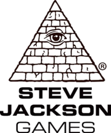

The Electronic Frontier Foundation was created in 1990 as a non-governmental organization to promote internet rights
What have they done?
DES cracker
In 1990s EFF was worried that the US government was refusing to switch encryption methods. The current method at the time, Data Encryption Standard, was already shown to be possible to crack. This caused the EFF to create a special machine designed to break DES, nicknamed Deep Crack. The EFF successfully lowered the time for cracking a DES message from 56 hours to under 24 hours. In the next 4 years, as a result of the EFF's actions, DES had been replaced by Advanced Encryption Standard.
The EFF's DES cracking machine.
Software
The EFF has made lots of software to protect privacy.

Legal cases
The EFF has taken legal cases in order to make sure that the publics internet freedoms are kept. The EFF will defend or bring lawsuits even standing against America's government or large companies. The first big case that the EFF took was Steve Jackson Games, Inc. v. United States Secret Service. This case occured when SJG was raided as an investigation of piracy. The secret service took many of the companies floppy disk which contained their upcoming game GURPS Cyberpunk. This promptly caused a lawsuit by SJG add was the reason that the EFF was created. The EFF has then taken many different court cases, many of which can be found here.
Spreading awareness
The EFF runs a regularly updated blog about updates in the privacy community. They often tell the their readers about current and future events that they should be looking out for. In addition to this, they have many recommendations on what software to use in order to maintain privacy. The EFF was also active during USA's 2016 national election due to controversy over phishing fabricating election results. The organization wrote about this and is attempting to reduce online phishing.
Are these actions sufficient?
I think that these actions are sufficient. One of the main tools to support privacy on the internet is to spread awareness. The EFF has been doing plenty of that and in addition to that, they have made plenty of tools to protect peoples privacy. Not only do these tools good, they are consistent recommendations to people wanting to be anonymous. I use the browser extensions and have been for a long time. They also don't let governments or big companies get in their way of protecting the consumer, offering legal service to anyone in need. This allows them to expose abusive government laws or big companies. These strengths allow the EFF to accomplish many different tasks that are successful in accomplishing their goal. However, what I think to be their main weakness is that they focus solely on America. Their actions target America, with them showing activism about America's election and them only doing legal cases in the USA. This is understandable, as being active in many different countries costs a lot of money. However, their blog focuses on American news and I think they could generalize and focus on many different countries big privacy law changes. It would be more effective if they discussed news around the world as they could create more of an impact if the spread awareness throughout the world. In addition, I think that it would be helpful in the EFF's efforts to set up a second headquarters in another country. They have accomplished a lot in the USA and it would be great to see the success in another country. This might be a long way off though, as it would cost a lot of money. Another weakness I see is the setup of their website. On their website they promote the blog first, and the resources to help someone stay anonymous are somewhat hidden. I think that the resources should be the priority as it creates the longest impact. The home page also has no statement on what they have done, another element that I think would benefit being on the first page.

John Gilmore, one of the founders of the EFF.